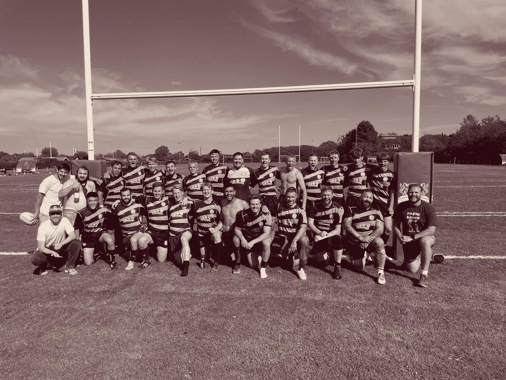

Where I'm from
I'm from Poulacapple East, a small village on the border of Tipperary and Kilkenny. I grew up in a rural area but went to school at St Kieran's College in Kilkenny, where I was lucky to have excellent teachers such as Joey Kavanagh and Carl Lynch.
From there it was University College Dublin, then Homerton College, Cambridge for Part III, then Copenhagen for my PhD at the Niels Bohr Institute. I'm now in Birmingham.
- 2026–
Postdoctoral researcherSchool of Physics and Astronomy and Institute for Gravitational Wave Astronomy, University of Birmingham
- 2022–26
PhD, Niels Bohr InstituteThesis: Motion Through Matter in Curved Space. Center of Gravity, supervised by Vitor Cardoso and Maarten van de Meent
- 2025
Visiting student, MITOne semester with Scott Hughes. I built the first version of this site there.
- 2023
Local organiser, 26th Capra meetingRadiation reaction in general relativity, Copenhagen
- 2021–22
Part III, DAMTP, University of CambridgeMASt in Applied Mathematics, Homerton College
- 2021
Summer research intern, IBM Research, Dublin
- 2017–21
BSc in Applied and Computational MathematicsUniversity College Dublin, with an Erasmus semester at the University of Edinburgh in 2020
Outside physics
I love playing and watching rugby. Growing up on the border of Munster and Leinster meant I got to choose my side, and given my firm view that Crowley is the clear choice at 10 over Prendergast, you can probably guess which way I went.
In Copenhagen I played for CSR Nanok in Christianshavn. Joining that club was one of the great joys of my time there, from training on frozen astroturf on dark winter nights to sunny league games in Aalborg with a fantastic group of people.
To the annoyance of my housemates I've also taken up the Anglo concertina, and we even managed to organise a few trad sessions with people from the institute. A public show is still some way off.
On repeat
- Fontaines D.C., "Bug"
- Arctic Monkeys, "Do I Wanna Know?"
- Lisa O'Neill, "All the Tired Horses"
- Hak Baker, "Windrush Baby"
- Radiohead, "All I Need"
On the wall
- Carl Bloch, In a Roman Osteria
- Jan Matejko, Stańczyk
- Caspar David Friedrich, Wanderer above the Sea of Fog
